铁观音
普洱
菊花
牛蒡
茉莉花
最能代表广州早茶文化的估计是普洱茶熟茶，它茶性温和，不容易醉茶，可谓老少佳宜。普洱茶茶汤浓厚，香气持久，香型独特，滋味浓醇，经久耐泡。普洱茶啜饮入口，虽茶汤入口略感苦涩，但待茶汤于喉舌间略作停留时，即可感受茶汤沁渗齿龈，令人神清气爽。
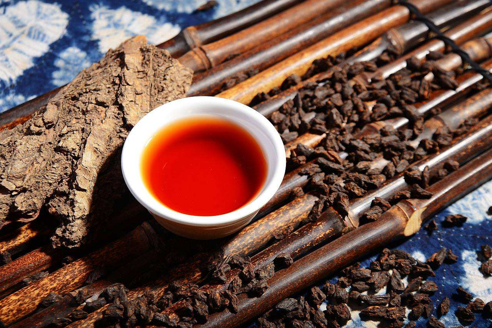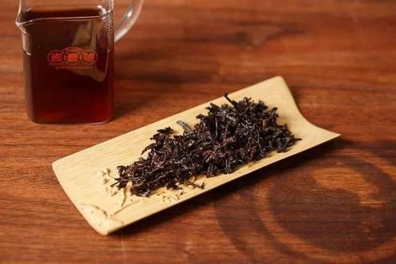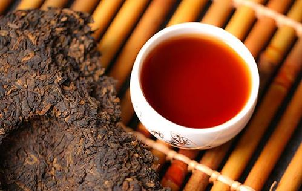
铁观音是中国十大名茶之一,独具“观音韵”，清香雅韵，冲泡后有天然的兰花香，滋味纯浓,香气馥郁持久，有“七泡有余香”之誉 。除具有一般茶叶的保健功能外，还具有抗衰老、抗动脉硬化、防治糖尿病、减肥健美、防治龋齿、清热降火，敌烟醒酒等功效。
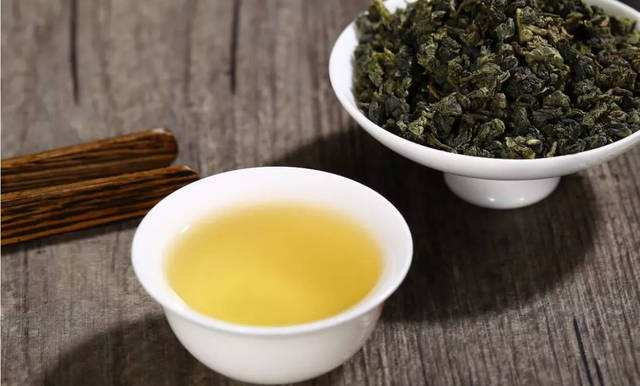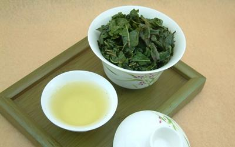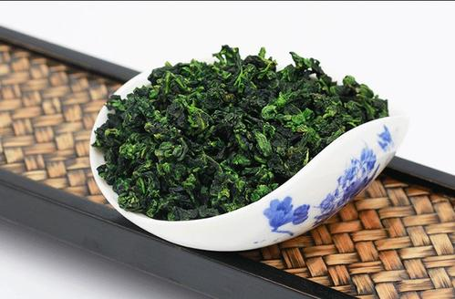
菊花茶经过鲜花采摘、阴干、生晒蒸晒、烘培等工序制作而成。据古籍记载，菊花味甘苦，性耐寒，有散风清热、清肝明目和解毒消炎等作用。随着生活水平的提高，人们越来越重视生活的质量，因而具有多重保健功能的茶用菊花也越来越受到人们的喜爱。
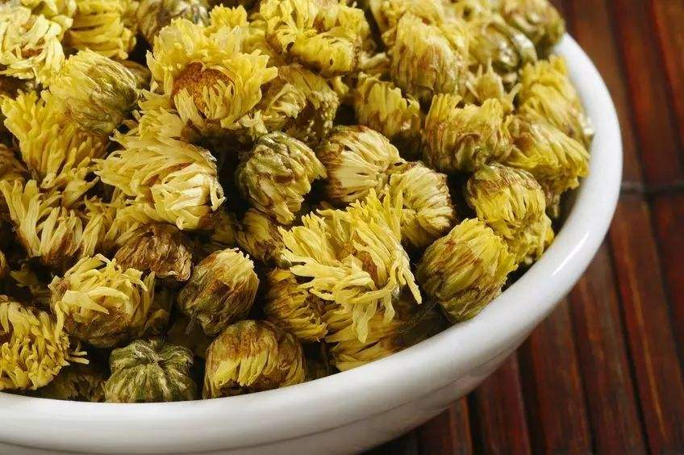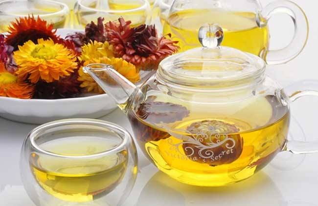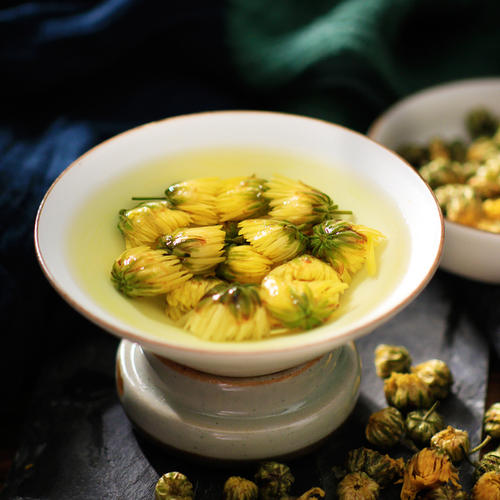
牛蒡茶是以中草药牛蒡根为原料的纯天然茶品,色泽金黄、是保健饮品。饮牛蒡茶具有利尿通便，排毒养颜，调节血糖血脂，降血压的功效。牛蒡所含丰富的食物纤维为水溶性的，它可以减缓食品释放出的能量,加速脂肪酸分解的速度,减弱脂肪在体内的聚集。
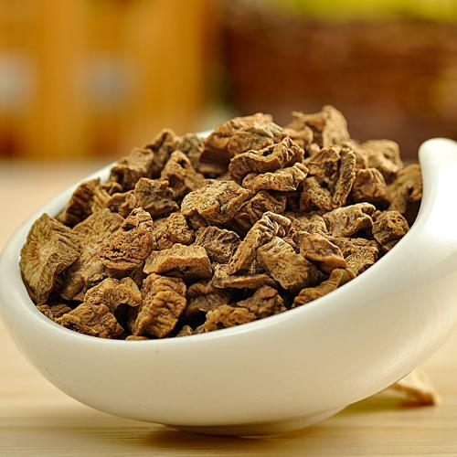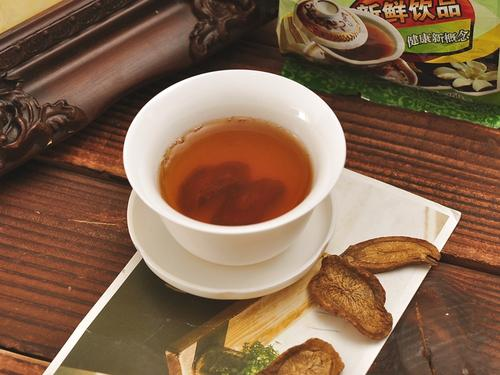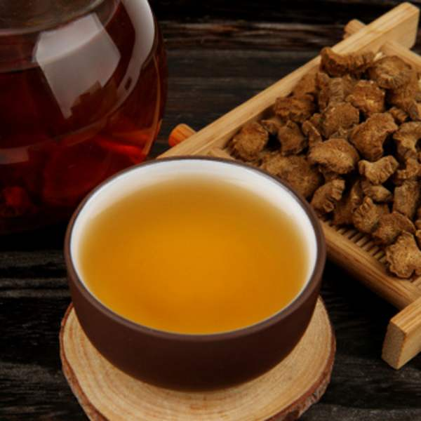
茉莉花茶将茶叶和茉莉鲜花进行拼和、窨制，使茶叶吸收花香而成的，茶香与茉莉花香交互融合，列作人间第一香。茉莉花茶寒邪，助理郁，是天然保健饮品，但喝多了会内分泌紊乱和月经失调，女性经期、怀孕期、哺乳期、临产期、更年期不宜饮用更多。
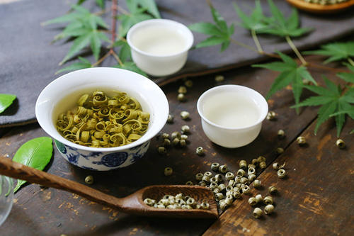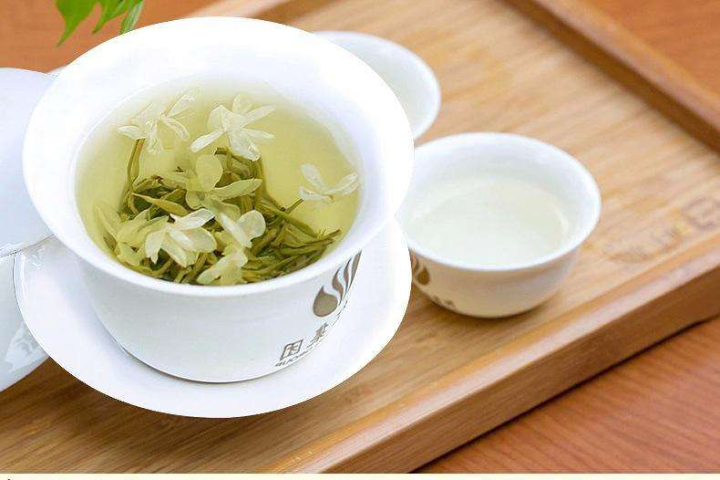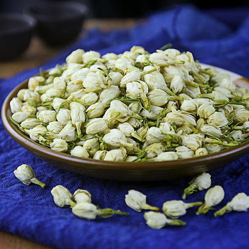